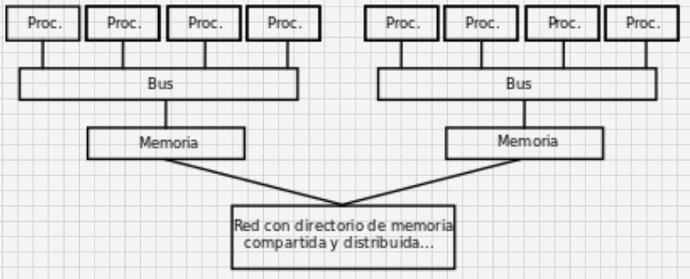
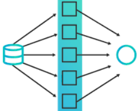
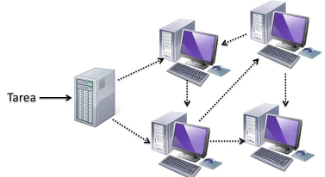
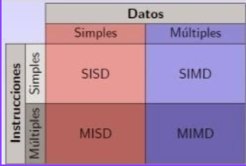
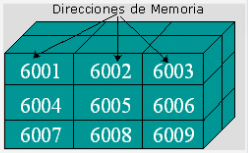
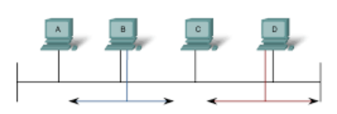
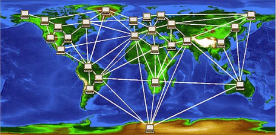

TECNOLOGICO NACIONAL DE MEXICO
INSTITUTO TECNOLOGICO DE SALTILLO
INGENIERIA EN SISTEMAS COMPUTACIONALES
UNIDAD 4
4.1 Aspectos Básicos de la Computación Paralela
La computación paralela es una técnica que utiliza múltiples procesadores para realizar cálculos complejos de manera simultánea. A diferencia de la computación secuencial, en la cual los procesos se ejecutan uno tras otro, la computación paralela permite que varios procesos se ejecuten al mismo tiempo.
Ventajas:
-Permite realizar cálculos complejos en un tiempo mucho menor, lo que puede ser crucial en aplicaciones en tiempo real
-Es escalable, lo que significa que se puede agregar más procesadores para aumentar el poder de procesamiento.
También es posible realizar tareas que no serían posibles con la computación secuencial, como la simulación de sistemas complejos o el análisis de grandes conjuntos de datos en tiempo real.
Es más robusta, ya que si un procesador falla, los demás pueden continuar trabajando sin interrupción.

4.2 Tipos de computación paralela
Paralelismo a nivel de bit:
Desde la década de 1970 hasta alrededor de 1986, se lograba la aceleración en la arquitectura de computadoras mediante la duplicación del tamaño de la palabra. Esto reducía la cantidad de instrucciones que el procesador debía ejecutar para realizar operaciones en variables cuyos tamaños eran mayores que la longitud de la palabra.
Paralelismo a nivel de INSTRUCCION:
Se refiere a la posibilidad de reordenar y combinar en grupos las instrucciones que conforman un programa para ser ejecutadas en paralelo. Los procesadores modernos tienen pipeline de instrucciones de varias etapas, cada etapa corresponde a una acción diferente del procesador en la instrucción correspondiente.
Paralelismo a nivel de datos:
Es inherente en programas con ciclos y se enfoca en la distribución de los datos entre los diferentes nodos computacionales que deben ser tratados en paralelo. La paralelización de ciclos conduce a menudo a secuencias similares de operaciones o funciones que se realizan en los elementos de una gran estructura de datos.
Paralelismo a nivel de tareas:
Se refiere a la capacidad de realizar cálculos completamente diferentes en cualquier conjunto igual o diferente de datos. Contrasta con el paralelismo de datos, donde se realiza el mismo cálculo en distintos o mismos grupos de datos. Este tipo de paralelismo generalmente no escala con el tamaño de un problema.
4.2.1 Clasificación
Las computadoras paralelas pueden ser clasificadas acorde con el nivel en el que el hardware soporta paralelismo. siendo esta clasificación análoga a la distancia entre los nodos básicos de cómputo. Estos no son excluyentes entre sí, por ejemplo, los grupos de multiprocesadores simétricos son relativamente comunes.
Computación multinúcleo: Un procesador multinúcleo es un procesador que incluye múltiples unidades de ejecución (núcleos) en el mismo chip. Por ende un procesador multinúcleo puede ejecutar múltiples instrucciones por ciclo de secuencias de instrucciones múltiples.
Multiprocesamiento simétrico: Un multiprocesador simétrico (SMP) es un sistema computacional con múltiples procesadores idénticos que comparten memoria y se conectan a través de un bus. La contención del bus previene el escalado de esta arquitectura.
Computación en clúster: Un clúster es un grupo de ordenadores débilmente acoplados que trabajan en estrecha colaboración, de modo que en algunos aspectos pueden considerarse como un solo equipo.
Procesamiento paralelo masivo: Tienden a ser más grandes que los clústeres, con mucho más de 100 procesadores. En un MPP, cada CPU tiene su propia memoria y una copia del sistema operativo y la aplicación.
Computación distribuida: La computación distribuida es la forma más distribuida de la computación paralela. Se hace uso de ordenadores que se comunican a través de la Internet para trabajar en un problema dado.
Computadoras paralelas especializadas: Dentro de la computación paralela, existen dispositivos paralelos especializados que generan interés. Aunque no son específicos para un dominio, tienden a ser aplicables sólo a unas pocas clases de problemas paralelos.
Circuitos integrados de aplicación especifica: Debido a que un ASIC (por definición) es específico para una aplicación dada, puede ser completamente optimizado para esa aplicación. Como resultado, para una aplicación dada, un ASIC tiende a superar a un ordenador de propósito general.
Procesadores vectoriales: Pueden ejecutar la misma instrucción en grandes conjuntos de datos. Tienen operaciones de alto nivel que trabajan sobre arreglos lineales de números o vectores.
 
4.2.2 Arquitectura de computadores secuenciales
Los computadores secuenciales se basan en el modelo introducido por John Von Neuman la cual consiste en:
-Una Unidad Central de Procesamiento (CPU).
-Memoria principal para almacenar información.
-Bus donde fluyan los datos.
-Mecanismo de sincronización.
Taxonomía de Flynn:
Es una clasificación de arquitecturas de computadores propuesta por Michael J. Flynn en 1972.
Se basa en el numero de instrucciones y de la secuencia de datos que la computadora utiliza para procesar información. Puede haber secuencias de instrucciones sencillas o múltiples y secuencias de datos sencillas o múltiples
Una instrucción, un dato (SISD) - Single Instruction, Single Data: Se refiere a una arquitectura computacional en la que un único procesador ejecuta un solo flujo de instrucciones, para operar sobre datos almacenados en una única memoria.
Características:
-La CPU procesa únicamente una instrucción por cada ciclo de reloj.
-Únicamente un dato es procesado en cada ciclo de reloj.
-Es el modelo más antiguo de computadora y el más extendido.
Múltiples instrucciones, un dato (MISD) - Multiple Instruction, Single Data: Donde muchas unidades funcionales realizan diferentes operaciones en los mismos datos. Las arquitecturas segmentadas pertenecen a este tipo.
Características:
-Cada unidad ejecuta una instrucción distinta.
-Cada unidad procesa el mismo dato.
-Aplicación muy limitada en la vida real.
Una instrucción, múltiples datos (SIMD) - Single Instruction, Multiple Data: Es una técnica empleada para conseguir paralelismo a nivel de datos, consisten en instrucciones que aplican una misma operación sobre un conjunto más o menos grande de datos.
Características:
-Todas las unidades ejecutan la misma instrucción.
-Cada unidad procesa un dato distinto.
-Todas las unidades operan simultáneamente.
Múltiples instrucciones, múltiples datos (MIMD) - Multiple Instruction, Multiple Data: Es una técnica empleada para lograr paralelismo. Las máquinas que usan MIMD tienen un número de procesadores que funcionan de manera asíncrona e independiente.
Características:
-Cada unidad ejecuta una instrucción distinta.
-Cada unidad procesa un dato distinto.
-Todas las unidades operan simultáneamente.

4.2.3 Organización de Direcciones de Memoria
¿Qué es una dirección de memoria?
-Identificador para una localización de memoria con
la cual un programa informático o un dispositivo de hardware pueden almacenar un dato para su posterior reutilización.
-Una forma común de describir la memoria principal de una
computadora es como una colección de celdas que almacenan datos e instrucciones.
Cada celda está identificada por un número o dirección de memoria.
La memoria distribuida refiere al hecho de que la memoria está distribuida lógicamente, pero implica a menudo que está distribuida físicamente también.
Memoria compartida distribuida es una combinación de los dos acercamientos, donde el elemento de proceso tiene su propia memoria y acceso locales a la memoria en procesadores non-local.
Los sistemas informáticos paralelos tienen dificultades con los escondrijos (direcciones de memoria) que pueden almacenar el mismo valor en más de una localización, con la posibilidad de ejecución de programa incorrecta. Estas computadoras requieren a coherencia del escondrijo sistema, que no pierde de vista valores depositados y los purga estratégico, así asegurando la ejecución de programa correcta.

4.3 Sistema de Memoria (compartida)
Un multiprocesador puede verse como un computador paralelo compuesto por varios procesadores interconectados que comparten un mismo sistema de memoria.
Los sistemas multiprocesadores son arquitecturas MIMD con memoria compartida. Tienen un único espacio de direcciones para todos los procesadores y los mecanismos de comunicación se basan en el paso de mensajes desde el punto de vista del programador.
Dado que los multiprocesadores comparten diferentes módulos de memoria, pudiendo acceder a un mismo módulo varios procesadores, a los multiprocesadores también se les llama sistemas de memoria compartida.
Dependiendo de la forma en que los procesadores comparten la memoria, se clasifican en sistemas multiprocesador UMA, NUMA y COMA.
Multiproceso es tradicionalmente conocido como el uso de múltiples procesos concurrentes en un sistema en lugar de un único proceso en un instante determinado. Como la multitarea que permite a múltiples procesos compartir una única CPU, múltiples CPUs pueden ser utilizados para ejecutar múltiples hilos dentro de un único proceso.
El multiproceso para tareas generales es, a menudo, bastante difícil de conseguir debido a que puede haber varios programas manejando datos internos (conocido como estado o contexto) a la vez.
Los programas típicamente se escriben asumiendo que sus datos son incorruptibles. Sin embargo, si otra copia del programa se ejecuta en otro procesador, las dos copias pueden interferir entre sí intentando ambas leer o escribir su estado al mismo tiempo.
Para evitar este problema se usa una variedad de técnicas de programación incluyendo semáforos y otras comprobaciones y bloqueos que permiten a una sola copia del programa cambiar de forma exclusiva ciertos valores.
Multitarea: Permite a múltiples procesos compartir una única CPU, múltiples CPUs pueden ser utilizados para ejecutar múltiples hilos dentro de un único proceso.
4.3.1 Redes de Interconexión dinámica (Indirecta)
Las redes de interconexión dinámica indirecta, también conocidas como DIND, son un tipo de arquitectura de interconexión utilizada en computadoras paralelas y supercomputadoras para conectar procesadores y memoria. En DIND, la conexión entre los nodos cambia dinámicamente en función de la carga de trabajo y las condiciones de la red, lo que permite un rendimiento óptimo y una alta escalabilidad.
Medio Compatido:
Las redes de interconexión dinámica indirecta y medio compartido son un tipo de arquitectura de redes de computadoras en las que múltiples dispositivos comparten un medio de transmisión de datos común, como un cable o un canal inalámbrico. En esta arquitectura, no hay un nodo central que controle la comunicación entre los dispositivos, sino que los dispositivos se comunican entre sí a través de la red mediante el envío y recepción de paquetes de datos.
En las redes de interconexión dinámica indirecta y medio compartido, cada dispositivo tiene una dirección única que se utiliza para identificarlo en la red. Cuando un dispositivo desea enviar datos a otro dispositivo, envía un paquete de datos que contiene la dirección del dispositivo de destino. El paquete se transmite a través del medio compartido y se recibe por todos los dispositivos conectados a la red. Sin embargo, solo el dispositivo de destino procesará el paquete y descartará el resto.
En general, las redes de interconexión dinámica indirecta y medio compartido se utilizan en redes de área local (LAN) de tamaño pequeño o mediano, donde el número de dispositivos conectados es relativamente pequeño y la cantidad de datos transmitidos no es muy grande. Sin embargo, en redes de mayor tamaño, se suelen utilizar otros tipos de arquitecturas de redes que permiten una transmisión más eficiente y una mejor gestión del tráfico de datos.
Conmutadas:
Una red conmutada o de conmutación, es clasificada como una conexión de diferentes ordenadores, independientemente de su estructura para que se puedan interconectarse y al mismo tiempo intercambiar informaciones, sin olvidar de los requerimientos o recursos que la complementan.
En un determinado momento cuando todos los ordenadores están conectados de unas hacia las otras, se les da una nominación de conexión red local o local network.
Indica que todas estas nominaciones de redes conmutadas o comunicaciones, están conformadas por nodos o puntos de interconexión, lo cual son como tipo de medio o puntos de conexión para la comunicación de la red, independientemente de las fronteras comunes que existan en las computadoras y demás terminales internamente en la red.
Redes experimentales:
Este tipo de red de acceso está vinculada con las universidades y otras diferentes entidades educativas superiores, que están plenamente dedicadas a la investigación sobre las conexiones de redes de los ordenadores. Hay que destacar que también este tipo de red de acceso pertenece a la familia de los protocolos TCP/IP, el mismo que fue desarrollada por este tipo de red de acceso.
Red academica originada:
Este tipo de red fue originada desde el 1981, cuando se dio inicios a la producción y creación de correos electrónicos y demás tipos de transferencias de informaciones y archivos conformadas por 20700 puentes de red o nodos interconectados distribuidos a nivel mundial.
Colectiva de redes:
Este término hace referencia de varias redes que están lideradas por el departamento de defensa o mayormente conocidos como DDN, que son las defensas del área de información. Hay que destacar también que cuando se dé una descripción en una letra minúscula, esta Colectiva de Red realizara una referencia genérica para hacer una interconsulta diversa de red.
Tipologias de nodos conmutadas:
En las determinaciones que se puede dar como referencia en lo que respecta al terma de los nodos de conmutación, se puede dar noción y referencia a los diferentes tipos nodos de conmutaciones que existen, lo cual se describe a continuación:
Nodos que automáticamente se enlazan con otros nodos. estos solo se encargan de la conmutación interna de datos de todos estos nodos.
Nodos que se enlazan con otros nodos y demás estaciones. Aunque estos nodos además se encargan de distribuir los datos desde y hacia las estaciones a las cuales están conectados en total.
 
4.4 Sistemas de Memoria distribuida. Multicomponentes
Existen dos tipos fundamentales de sistemas de memoria distribuida o multicomputadoras. El primero es un sistema en el que una única computadora cuenta con varias CPUs conectadas por un bus de datos, mientras que el segundo tipo utiliza varios ordenadores, cada uno con su propio procesador, interconectados por una red de comunicación de mayor o menor velocidad.
Cada nodo tiene acceso rápido a su propia memoria y puede acceder a la memoria de otros nodos a través de una red de comunicaciones, que normalmente es una red de alta velocidad. Los datos se intercambian entre los nodos como mensajes a través de la red. Una red de ordenadores, especialmente si dispone de una interconexión de alta velocidad, puede ser considerada como un sistema de memoria distribuida o multicomputadora y, por lo tanto, utilizada para resolver problemas mediante computación paralela.
Ventajas:
-El número de nodos puede ir desde algunas decenas hasta varios miles (o más).
-La arquitectura de paso de mensajes tiene ventajas sobre la de memoria compartida cuando el número de procesadores es grande.
-El número de canales físicos entre nodos suele oscilar entre cuatro y ocho.
-Esta arquitectura es directamente escalable y presenta un bajo coste para sistemas grandes.
Desventajas:
-Se necesitan técnicas de sincronización para acceder a las variables compartidas.
-La contención en la memoria puede reducir significativamente la velocidad.
-No son fácilmente escalables a un gran número de procesadores.
4.4.1 Redes de interconexión estáticas
Los multicomputadores utilizan redes estáticas con enlaces directos entre nodos. Cuando un nodo recibe un mensaje lo procesa si viene dirigido a dicho nodo.
Si el mensaje no va dirigido al nodo receptor lo reenvía a otro por alguno de sus enlaces de salida siguiendo un protocolo de encaminamiento.
Clase de redes de interconexión:
Formación lineal: Se trata de una red unidimensional en que los nodos se conectan cada uno con el siguiente medianteN-1 enlaces formando una línea.
Mallas y toros: Esta red de interconexión es muy utilizada en la práctica. Las redes en toro son mallas en que sus filas y columnas tienen conexiones en anillo, esto contribuye a disminuir su diámetro. Esta pequeña modificación permite convertir a las mallas en estructuras simétricas y además reduce su diámetro a la mitad.
Propiedades más significativas:
Topología de la red: determina el patrón de interconexión entre nodos.
Diámetro de la red: distancia máxima de los caminos más cortos entre dos nodos de la red.
Latencia: retardo de tiempo en el peor caso para un mensaje transferido a través de la red.
Ancho de banda: Transferencia máxima de datos en Mbytes/segundo.
Escalabilidad: posibilidad de expansión modular de la red.
Grado de un nodo: número de enlaces o canales que inciden en el nodo.
Algoritmo de encaminamiento: determina el camino que debe seguir un mensaje desde el nodo emisor al nodo receptor.

4.5 Casos para estudio
PROCESAMIENTO DE GRANDES CONJUNTOS DE DATOS:
El procesamiento de grandes conjuntos de datos puede requerir una gran cantidad de recursos de cómputo. Se pueden utilizar técnicas de procesamiento paralelo para acelerar el procesamiento y mejorar la eficiencia. Por ejemplo, el sistema de procesamiento de datos Apache Hadoop utiliza técnicas de procesamiento paralelo para analizar grandes conjuntos de datos.
Aprendizaje profundo:
El aprendizaje profundo implica el entrenamiento de redes neuronales profundas en grandes conjuntos de datos. Se pueden utilizar técnicas de procesamiento paralelo para acelerar el entrenamiento y mejorar la precisión. Por ejemplo, el sistema de aprendizaje profundo TensorFlow utiliza técnicas de procesamiento paralelo para entrenar redes neuronales en GPUs.
Simulación de sistemas físicos:
La simulación de sistemas físicos, como sistemas mecánicos o sistemas electromagnéticos, puede requerir una gran cantidad de recursos de cómputo. Se pueden utilizar técnicas de procesamiento paralelo para acelerar la simulación y mejorar la precisión. Por ejemplo, el software de simulación COMSOL Multiphysics utiliza técnicas de procesamiento paralelo para simular sistemas físicos complejos.
Medicina:
En el área médica, procesos como tomografías asistidas por computadora requieren de un procesamiento veloz para que se tenga un diagnostico concreto.
Procesamiento de imagenes:
El procesamiento digital de imágenes utiliza el procesamiento paralelo principalmente para el ahorro de recursos en cuestión de tiempos de ejecución y hardware utilizados al momento de enfocar, desenfocar, detectar bordes, entre otras acciones.